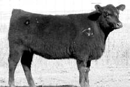

Friday, March the 24th, 2006
back to: title, date or indexes
Sometimes it becomes apparent that the world is even stranger than we thought. Here is a telling example. Look at this cow.

I want you to imagine that you have been given the pleasurable task of naming the cow. The choice is yours. Spend a few minutes thinking about it, study the picture, run a few ideas through your head, and plump for the one that seems most suitable.
Someone at the Dickinson Ranch in Gorham, Kansas, did what you have just done. Perhaps it was purveyor of “performance cattle that calve on the range and graze through the winter” Kirk Dickinson himself. Astonishingly, what went on in his head was something like this:
“Hmm, this is a fine cow. I think I'll name it after an eighties pop group given to portentous witterings, remembered today for that matchless paean to vapidity Vienna, it means nothing to me. No doubt the minstrel Midge Ure will be pleased to know he has a cow named after his old band. The cow's name shall be Ultravox!”
Thanks to Alasdair Dickson for drawing my attention to this. That's Dickson, by the way, not Dickinson. Alasdair is no relation to the surely demented rancher.